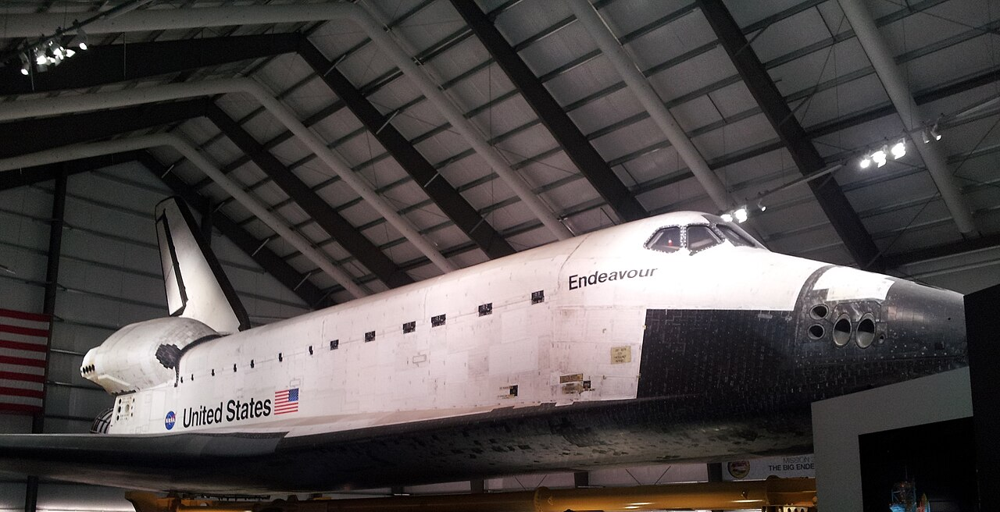
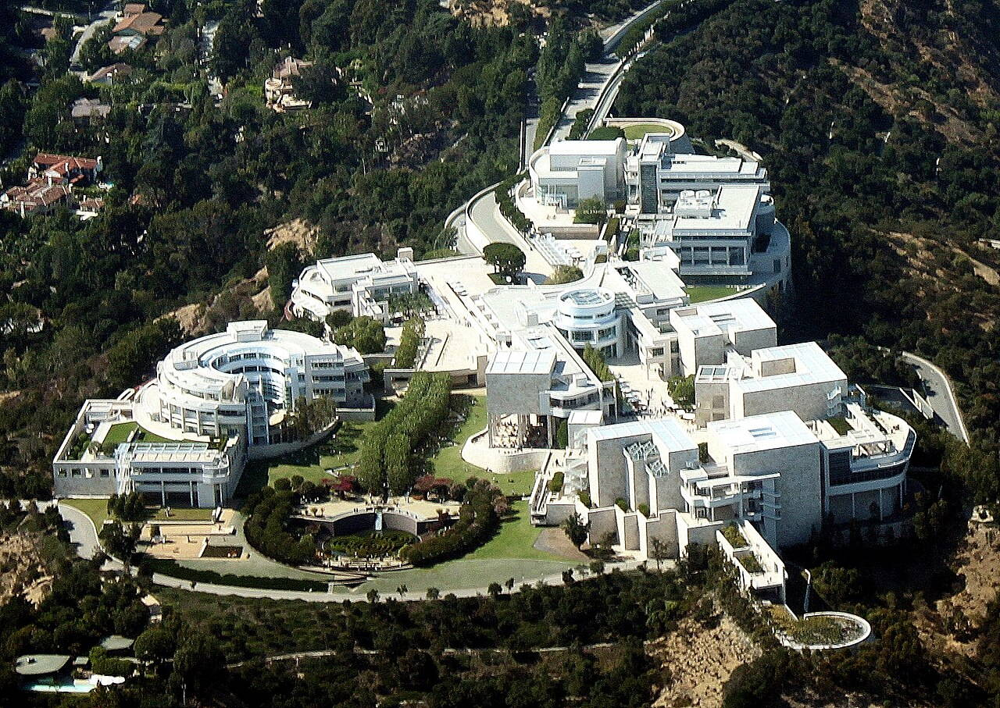

OTIUM is the practice of deliberate leisure. In the classical sense, otium is not escape from work but time when attention returns to memory, landscape, and thought — without a utilitarian deadline.
We shape routes for lingering, not for checklist tourism. The goal is presence in a place rather than consumption of sights.
OTIUM is not a tour operator. It is an invitation to walk, pause, and leave a route unfinished if the light on a façade deserves another minute.
Исторические и справочные гербы
Los Angeles
Guide. Places in this edition: 12.
Историческая справка
Лос-Анджелес — крупнейший город Калифорнии и второй по населению в США.
Испанские миссии, нефть, киноиндустрия Голливуда и авиация сформировали растянутую агломерацию. Океан, каньоны и этнические кварталы сочетаются с мировым центром развлечений и технологий.
California Science Center
Address: Exposition Park | Style: Exhibition hangars and IMAX theatres | Period: 1998 Samuel Oschin Pavilion for Endeavour

Space Shuttle Endeavour display with hands-on galleries and sketched mission timelines.
Facts and details
Timed reservations still apply for shuttle pavilion entry at peak holidays.
Exposition Park Rose Garden sits west for picnic breaks.
History
Endeavour flew LA streets in 2012 before tilt-up into the vertical stack exhibit.
Significance
NASA hardware anchor in Exposition Park museum row.
Getty Center
Address: Brentwood hilltop | Style: White enamel travertine pavilions around central garden | Period: 1997 (Meier)

European paintings, illuminated manuscripts, and decorative arts campus reached by tram from underground parking.
Facts and details
General admission is free; timed vehicle reservation may apply weekends.
Cactus garden overlooks runways and Pacific marine layer.
History
J. Paul Getty Trust consolidated programs from Malibu villa to this fire-resistant hilltop archive and galleries.
Significance
LA's most visited paid-admission-free art destination.